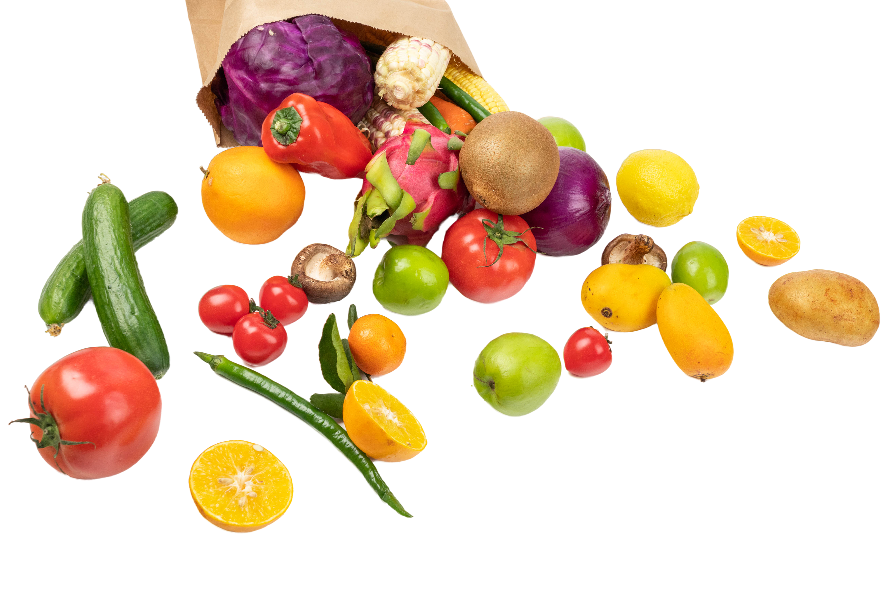

Рецепты, которые получаются с первого раза

Хорошее блюдо начинается с хороших продуктов. Узнайте, как выбрать, хранить и использовать основные ингредиенты.
Основа здорового питания. Содержат витамины, минералы и клетчатку. Выбирайте сезонные продукты — они вкуснее и полезнее.
Источники белка и незаменимых аминокислот. Обращайте внимание на свежесть и срок годности.
Долго хранятся и дают энергию. Основа многих блюд.
| Продукт | Где хранить | Срок | Температура |
|---|---|---|---|
| Молоко | Холодильник | 3–5 дней | +2…+4 °C |
| Курица (сырая) | Холодильник | 1–2 дня | 0…+2 °C |
| Яйца | Холодильник | 3–5 недель | +2…+5 °C |
| Картофель | Тёмное место | 2–3 месяца | +4…+8 °C |
| Крупы | Шкаф | 6–12 месяцев | +15…+20 °C |
Не храните вместе фрукты и овощи: фрукты выделяют этилен, из-за которого овощи быстрее портятся.
Перейти к рецептам